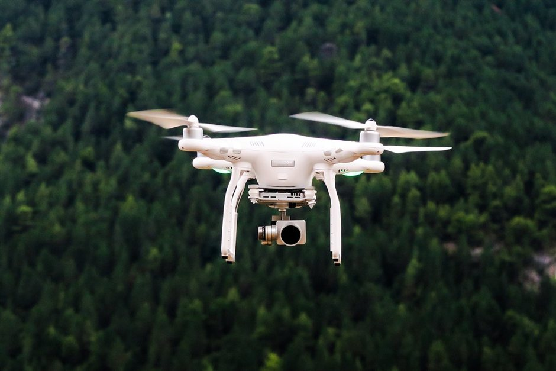

Drone laws in Morocco are uncompromising. Unless you hold prior commercial approval from the Civil Aviation Authority and the Ministry of Interior, flying—or even bringing—a drone across Moroccan borders is illegal. Unmanned aerial devices detected in luggage at Marrakech Menara Airport, Casablanca, or ferry terminals like Tangier Med are immediately confiscated by customs.
Beyond aerial restrictions, ground photography at Erg Chebbi presents physical challenges. Sahara sand grains are exceptionally fine and wind-driven. Without specific precautions, silica dust quickly coats smartphone charging ports, jams lens zoom rings, and settles onto camera sensors. Here is how we handle electronics on the drive from Marrakesh or Fes and out in the dunes.
Moroccan Drone Regulations and Customs Impoundment
Drones fall under strict security regulations in Morocco. Personal, recreational flying is completely prohibited. Customs agents scan all incoming baggage with X-ray equipment at entry points. If a drone is identified in your luggage, customs officers issue an official receipt and impound the equipment on the spot.
If your trip enters through Marrakech and exits through Casablanca or Fes, retrieving an impounded drone is difficult and expensive. Storage fees accumulate daily, and retrieving gear requires returning to your original port of entry. We strongly advise leaving all drones at home.
- Recreational drone use is strictly illegal across Morocco without commercial permits.
- Baggage X-ray scanners reliably flag drones at airports and ferry terminals.
- Impounded drones can only be retrieved at the exact entry airport upon departure.
Why Erg Chebbi Sand Harms Sensitive Electronics
Dune sand around Merzouga differs from coarse ocean beach sand. It consists of microscopic quartz dust particles that float effortlessly on slight desert breezes. Even on calm days, ambient wind carries dust that settles into fine seams on camera bodies and phone casings.
Forced mechanical movement—such as turning a gritty zoom lens or plugging a cable into a dusty charging port—grinds dust particles into internal components. Effective gear protection relies on sealing equipment before sand reaches it, rather than attempting to clean it after exposure.
Protecting Camera Lenses and Sensors in the Dunes
Lens swaps should never occur outdoors in the dunes. If you shoot with an interchangeable lens camera, select one versatile focal length—such as a 24-70mm—and leave it mounted for your entire dune excursion. If a lens change is necessary, perform it inside a closed vehicle or a sealed camp tent.
Standard zipper seams on camera bags allow fine dust to penetrate. Roll-top dry bags (waterproof dry sacks) provide a far better seal against desert dust. Wrap camera bodies in thin plastic sleeves or dry bags while walking between locations, taking them out only when ready to frame a shot.
Smartphone Protection, Charging Ports, and Active Excursions
Mobile phones are particularly vulnerable at their open connection ports and micro-speaker grilles. Silica dust accumulates inside USB-C and Lightning ports, preventing power cables from seating properly. Inserting small silicone port plugs or applying a piece of painter's tape over open ports stops dust build-up.
During active excursions like a [camel, quad, or buggy ride](/blog-camel-quad-buggy), keep your smartphone inside a sealed zip-top bag tucked in a secure pocket. Avoid placing phones in open vehicle storage compartments, where vibration grinds sand directly against glass screens.
Cleaning Your Equipment After Desert Exposure
Never use compressed air cans or breathe onto sand-dusted glass; humidity from your breath converts dry silica into sticky mud. Use a soft, hand-operated rubber rocket blower to puff away dry surface dust from lens elements, rubber grips, and sensor glass.
Wipe external surfaces down with a clean microfiber cloth only after blowing away loose sand. For broader prep advice on packing gear for the journey south, check our complete [packing checklist](/blog-packing-checklist) and tips for [night photography](/blog-photograph-stars).
| Equipment | Primary Desert Risk | Recommended Protection |
|---|---|---|
| Drones (All Types) | Confiscation at border customs & daily storage fees | Do not bring to Morocco; leave at home |
| Interchangeable Lenses | Dust entering sensor chamber during swaps | Mount one lens; change only inside closed vehicles |
| Camera Bodies & Bags | Fine sand creeping through zipper teeth | Use roll-top dry bags; clean with manual air blowers |
| Smartphones | Silica blocking USB-C/Lightning ports | Use rubber port plugs and zip-lock pouches |
| Optical Filters | Micro-scratches from wiping dusty glass | Blow away sand particles completely before wiping |

Illustration, not a photograph — for the real thing, you'll have to stand on the ridge yourself.
Quick answers
A few follow-up questions travelers ask about this.
Can I fly a drone in Erg Chebbi if no one is around?
No. Drone bans are national law and actively monitored. Royal Gendarmerie officers and desert patrols operate around Merzouga and will confiscate unauthorized drones.
What happens if customs impounds my drone at the airport?
Customs issues a paper claim ticket. You must pay daily storage fees and retrieve the drone from the exact terminal where you landed when exiting the country.
How do I safely clean sand out of a phone charging port?
Do not use metal pins or paperclips. Blow air into the port with a manual rubber rocket blower. If sand remains trapped, use a non-conductive wooden toothpick with minimal pressure.
Planning your own route?
Tell us your dates and what matters to you — we'll answer with a straight recommendation, not a brochure.
Send an inquiry See the itineraries